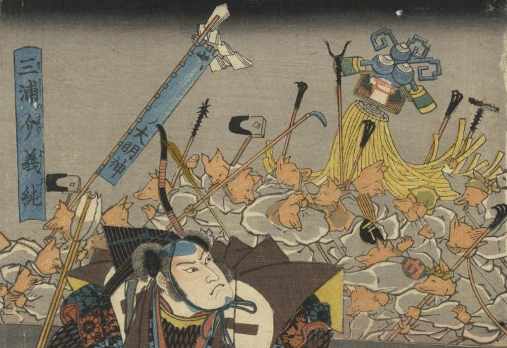

多数の狐が火消しの道具を持っている。
著作者：香蝶樓豊國／出典：親書誌：U426_nichibunken_0344：安倍泰成調伏妖怪圗；アベノ ヤスナリ チョウブク ヨウカイ ノ ズ／日付：2014／資源識別子：U426_nichibunken_0344_0003_0000
Copyright (c)2010- International Research Center for Japanese Studies, Kyoto, Japan. All rights reserved.